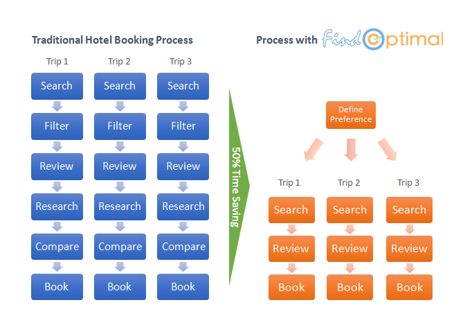

Traditional Hotel Search

With a traditional travel site, you search for a destination and it returns dozens of results. You have no idea how those results are ranked. You need to review them one by one, dig into individual pages to find out information you care about, and compare multiple candidates side by side. Furthermore, you'd better to check other travel sites to make sure you get the best prices. The whole process can easily take a couple of hours. And the most frustrating part is that you need to repeat the same process when you have another trip. Sometimes you have to reserve a hotel with your smart phone. Can you imagine how hard it is doing all of the above mentioned researches and comparisons with a tiny screen?